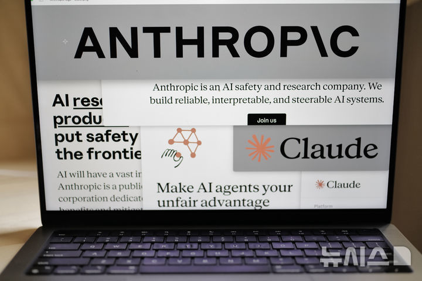

01 · GLOBAL
Anthropic IPO 신청
성장률과 비용 구조를 자본시장 검증대로 가져가다
뉴시스는 Anthropic이 나스닥 IPO 신청서를 제출했다고 보도했다. 상반기 매출 163억 달러와 기업 고객 증가가 공개된 동시에, 807억 달러 순손실과 대규모 컴퓨팅 비용도 함께 드러나 AI 기업의 성장성과 수익성을 동시에 묻는 사례가 됐다.
원문 보기 ↗ADDIT INSIGHT
AI 사업의 확장은 매출 성장률과 함께 인프라 비용·손실·현금흐름을 한 화면에서 관리해야 한다.